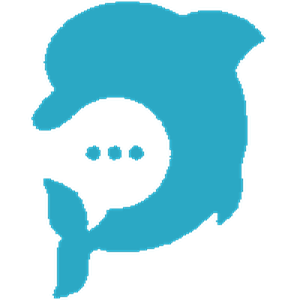
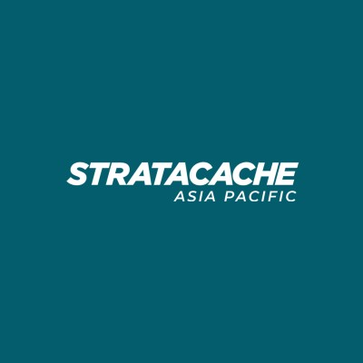

Kaemi / Jing Zhu · Growth, community & hands-on execution.

DeepChatBI
Growth Partner
2026 · Former role
Brand, content, and marketing for an AI advertising platform serving Shopify brands and agencies.
Managed LinkedIn, X, Facebook, and Xiaohongshu across global and Chinese markets, from content planning and publishing to community replies.
Developed product and marketing materials across the website, whitepaper, use cases, and supporting campaign assets, translating product capabilities into clear messaging for prospective customers.
Wrote the website copy and built the official site with ChatGPT and Claude Code. Created the product demo video to explain the platform and show its workflows in action.
Built an outreach pipeline of 100+ e-commerce brands and carried out prospecting to support customer acquisition.
Maintained client relationships through check-ins, feedback collection, and retention support.
Growth and content operations for a decentralized AI computing network.
Explored potential partnerships across the Layer 1 and Layer 2 ecosystem, engaging networks to identify collaboration opportunities for the decentralized AI computing platform.
Selected and onboarded X creators based on audience fit, content quality, and engagement.
Managed the creator database, outreach process, and ongoing partnerships.
Planned creator participation and content distribution for campaign launches.
Built frontend pages with AI-assisted coding.
RouteX
Head of Community & Growth
Project experience
Growth strategy & decision-making
The opportunity was in other communities.
RouteX is a DeFi aggregator with a low integration barrier: it can fit into other DeFi, social, and NFT products. I built the growth strategy around that advantage — reaching relevant users through the communities they already belonged to.
01 / Choose the right partners
I evaluated audience overlap, genuine community interaction, and whether we could build a concrete product-led activity together. That framework guided the Movement, Colony, and OKX collaborations.
02 / Remove participation friction
I chose Galxe tasks and wallet verification to avoid another sign-up step. Familiar Web3 participation flows made it easier to roll campaigns out across the Movement ecosystem.
03 / Make the association stick
I adapted Movement’s yellow Pepe with the RouteX logo to create a shared visual identity. It was a low-budget brand decision designed to keep both projects recognizable together.
04 / Give people a reason to return
I moved beyond one-off tasks to trading competitions tied to product use. I designed the $30K campaign’s leaderboard, weekly missions, and anti-wash-trading rules, then owned community explanations, questions, and follow-up.
0 → 150KX audience built from scratch
1,500Reported AMA listeners
$200K+USDC committed in Colony Seed raise
The Seed raise was a project outcome. My role began after the fundraising arrangement was confirmed: community communications and activity coordination, rather than initial fundraising negotiations.
What I would carry forward
The trade-off was deliberate: at that stage, I prioritized building an audience before optimizing conversion. My approach now starts with a measurable target, then works backward to content and partnerships. I want every collaboration to have its own tracking link, so returning users and drop-off points are visible the same day. My next focus is turning audience into growth I can report.
Proposed a capybara mascot to give the liquid staking launchpad a recognizable community identity. The team adopted the concept in its brand, banner, and published social content.
Previously ironSource. Managed enterprise client onboarding and ongoing technical support, working across BI tools, API integrations, and product implementation.

SCALA APAC
Technical Support Manager
2021 – 2022
Provided pre-sales and post-sales technical support for enterprise media and content management systems. STRATACACHE Asia Pacific
Enterprise IT & Infrastructure
Cognizant / Cummins / Lenovo
2015 – 2021
Worked across application support, infrastructure, and IT project delivery for enterprise clients.